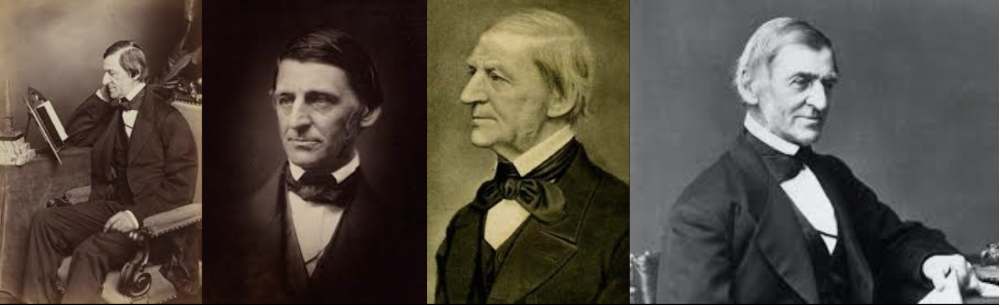
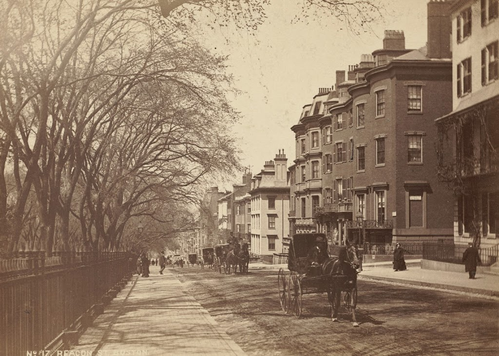
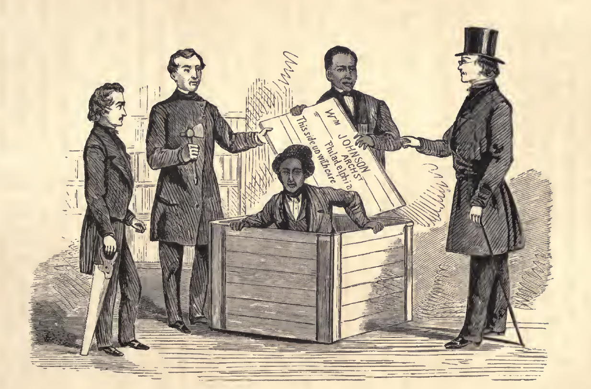
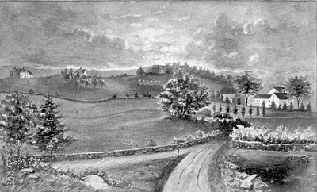
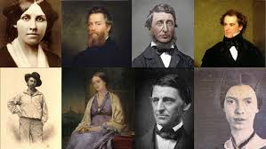

Transcendentalism
The father of American literature and a significant figure in Transcendentalism, which is one of history's most important philosophical movements.
May 25, 1803 — April 27, 1882
“Individuals should not study nature as if it were an object, but experience it as if it were a living spirit.”
Popular Transcendentalist Belief (Hankins)

The Intellectual leader
Ralph Waldo Emerson was born in Boston on May 25, 1803, into a distinguished New England family, that dated back to the first settlers of America. He also came from a long line of ministers (Myerson). His father preached Unitarianism, which influenced Emerson, and later was challenged by him (McGuire & Wheeler).
Furthermore, Emerson studied at Boston Public Latin School and Harvard. He eventually accepted a pastorate at the Second Church of Boston (McGuire & Wheeler). However, when his wife, Ellen Tucker, died of tuberculosis he suffered emotionally, causing him to resign and he started questioning his beliefs (McGuire & Wheeler).
For context into his life, it is important to note that when Emerson was born, the US was only about 3 decades old, with about 6 million people. By the time he died in 1882, the population reached 52 million, evolving rapidly and Emerson led Transcendentalists during this time period. (Myerson).

At the time, America was culturally dependent on Europe, and was still developing, including socially. Emerson became a major part in this change, by pushing back against inherited European tradition and urging others to think, write, and live in a more unique way. Also, the nation was leading up to the Civil War (McGuire & Wheeler).
Timeline and Public events
1803
Born in Boston, Massachusetts
Born May 25th into a family with a long line of ministers, dating back to the early settlers (Myerson).
Early Education
Boston Latin School & Harvard
Attended two of New England's most prestigious schools, including Harvard Divinity School, which shaped his ideas/foundation. However, he was not considered a strong student when at Harvard (McGuire & Wheeler).
1836
Nature Published & Transcendentalist Club Founded
Emerson published Nature, which is described as a virtual manifesto for Transcendentalism. That same September, the Transcendentalist Club was founded in Boston by a group of individuals with similar beliefs. He was the most famous from the group & their leader & best writer (Hankins).
1837
Harvard Divinity School Address
Emerson delivered his address at Harvard, where he said numerous controversial ideas regarding religion, so he wasn't invited back for 30 years. He said that all humans, not just God, were capable of divine inspiration, and that individuals should follow their own inner moral law. (McGuire & Wheeler) (Hankins).
Mid-1800s
Sparking the American Renaissance in Literature
Emerson's influenced many great authors and poets like Thoreau, Hawthorne, Whitman and Fuller. He also continued to publish essays like "Self-Reliance" and lectured, influencing the younger generation (McGuire & Wheeler).
1882
Death & Enduring Legacy
Emerson died April 27th, and is recognized as the father of American literature. His educational ideas influenced Harvard president Charles W. Eliot, and his overall philosophy still shapes American culture (Myerson).
The Philosophy
Founded September 19, 1836 in Boston, the Transcendentalist Club gathered many individuals that thought differently at their time (Hankins).
HOVER TO REVEAL
Nature as the Divine
Transcendentalists believed nature was like God. It was a universal spirit that communicates through the natural world and that to know nature was to draw closer to the divine (Hankins).
HOVER TO REVEAL
Individual Divinity
Emerson thought that all people are capable of divine inspiration, and that every human soul carried the ability to be something greater. This claim led to accusations of atheism and naturalizing religion (Hankins).
HOVER TO REVEAL
Inner Moral Law
Emerson encouraged people to follow their own inner moral law, even when that meant going against popular opinion. He believed individuals were capable of determining right and wrong for themselves (Myerson).
HOVER TO REVEAL
Equality of All Souls
Transcendentalism praised the divine equality of every soul and that all people deserve social and political equality. This belief united the movement around abolition and women's rights, especially when the Fugitive Slave Law was passed (Gura).
HOVER TO REVEAL
Beyond Mundane Rules
Transcendentalists wanted a greater, deeper experience from life instead of simply living by mundane social rules. they wanted wanted individuality, rather than conforming to society's expectations (Hankins).
HOVER TO REVEAL
Self Before Society
Emerson believed self-reform must come before social reform. But other trancendentailisists thought that his extreme focus on individualism could lead to negative side effects like ego, and that he wasn't doing enough for social reform. (Gura).
Advocacy & Action
Although Emerson's primary focus was on personal and spiritual development, he was engaged with other social struggles/reform of the 19th century (Myerson). He publicly opposed the Fugitive Slave Act and advocated for equality for women, poor, and enslaved individuals (McGuire & Wheeler). He showed his support in lectures and essays that reached a wide audience, specfially students and scholars.
He also supported the concept of "free soil," which was stopping the spread of slavery into new territories, favoring gradual emancipation and approved of Northern efforts to protect enslaved individuals (Myerson).
Transcendentalists and him believed in the divine equality of all souls, providing a moral foundation for their activism in abolition. (Gura).

Also, rather than joining transcendentalist communities, like Brook Farm, he chose to work through mentorship training protégés who would carry his ideas forward into the world (Gura).
This made other Transcendentalists critical, who felt his focus on individualism could produce consequences like ego (Gura). This showcased a split within the movement as some wanted inner transformation, and others more social action.

Lasting Impact

Emerson's greatest achievement may have been the American Renaissance he inspired. As intellectual leader and mentor of the Transcendentalist movement, he influenced some of the most celebrated writers in American literary history (McGuire & Wheeler).
Also, his educational ideas Charles W. Eliot, the president of Harvard, who was influenced by Emerson's vision of what learning could be (Myerson). Also even though he was banned from Harvard after his Divinity School Address, Emerson was eventually welcomed back, elected to the Board of Overseers and invited to lecture once more (McGuire & Wheeler).
Furthermore, after the Civil War, as other Transcendentalists moved on or passed away, Emerson became the lasting face of the movement. However, some thouht this took away from the brotherhood aspect of transcendentalism (Gura).
Writers & Thinkers Influenced by Emerson:
(Hankins) (McGuire & Wheeler)
Today, Emerson is considered the father of American literature, reflecting his contriubutions and influence on writers that followed. (McGuire & Wheeler). Ralph Waldo Emerson was highly effective in bringing change, as he was able to encourage individual thought and expression through his lectures, essays and by leading the Transcendentialist movement
Bibliography
Gura, Philip F. "Transcendentalism and Social Reform." Gilder Lehrman Institute of American History, Gilderlehrman.org, 2024, www.gilderlehrman.org/history-resources/essays/transcendentalism-and-social-reform.
Hankins, Barry. The Second Great Awakening and the Transcendentalists. Westport, Conn., Greenwood Press, 2004.
McGuire, William, and Leslie Wheeler. "Ralph Waldo Emerson." American History, ABC-CLIO, 2026, americanhistory.abc-clio.com/Search/Display/246759. Accessed 17 Mar. 2026.
Myerson, Joel. A Historical Guide to Ralph Waldo Emerson. New York, Oxford University Press, 2000.